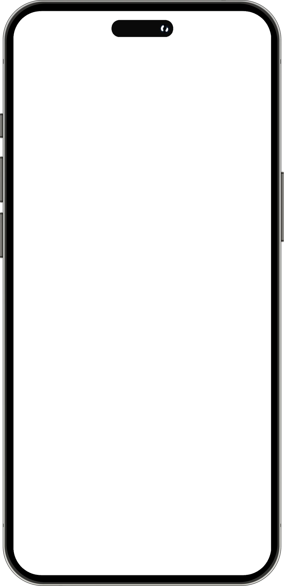
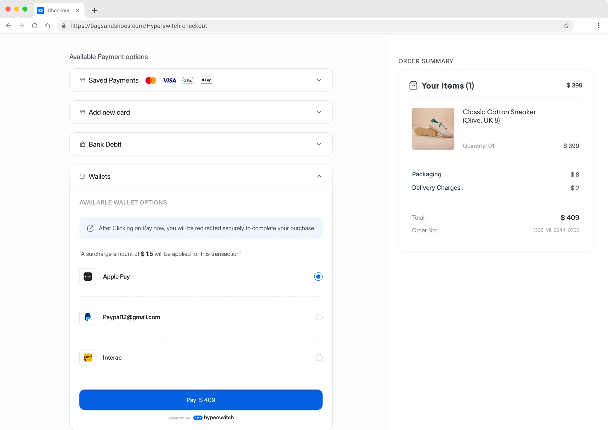
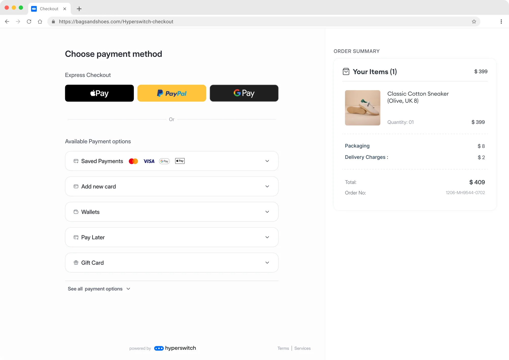
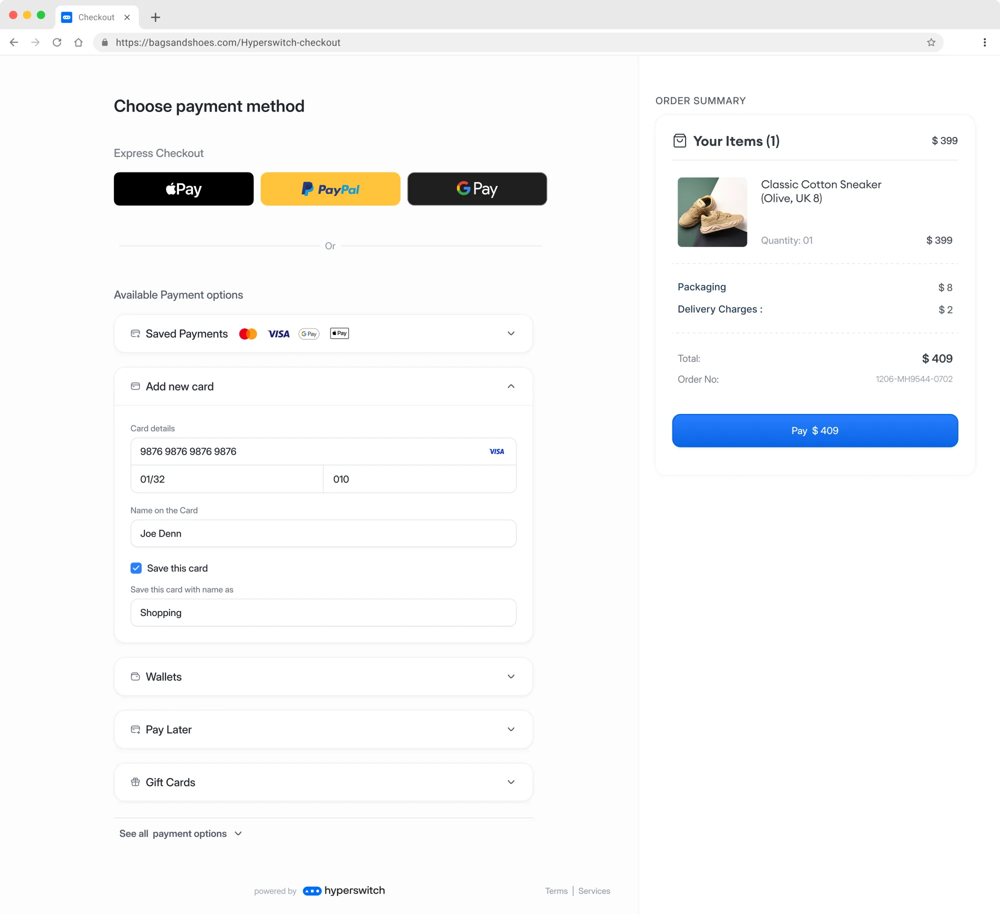
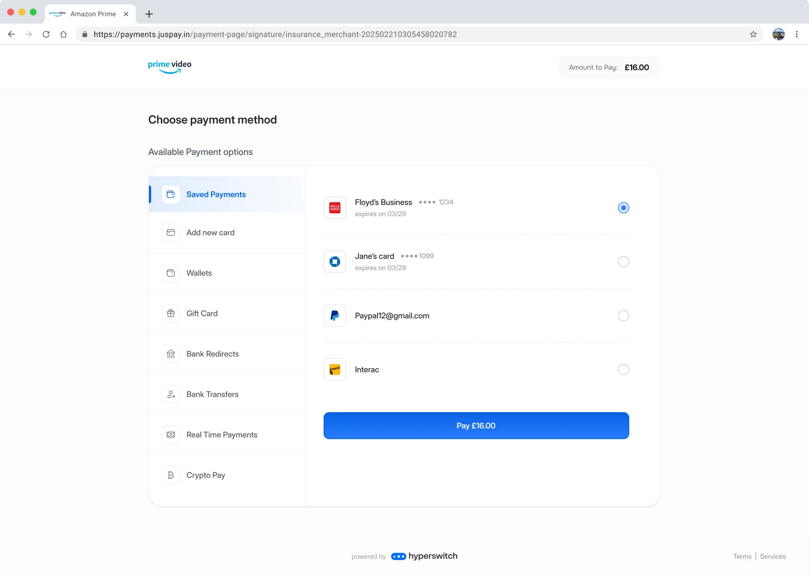

Hyperswitch SDK
- Solo Product Designer
- Juspay Hyperswitch
- End-to-end revamp



Redesigned the Hyperswitch payment SDK end to end as the only designer on it, from how payment methods are grouped to each method's own screen, across web and mobile.
What is the Hyperswitch SDK?
The Hyperswitch SDK is the checkout that merchants drop into their store. It brings together the payment methods shoppers in Western markets expect, like cards, wallets, pay later and gift cards, on one page. Merchants can turn on many of them, but cards are the one almost everyone sets up, so the card flow got the most attention.
The old checkout
Web and mobile, side by side
The SDK supports around ten payment methods. These are the four shoppers meet most, each shown on the web with the same moment on a phone beside it.
Saved payments
Cards and wallets the shopper has used before, ready to pick in one tap.


Add new card
The flow almost every merchant turns on: card details, name, and the option to save it for next time.


Wallets
Apple Pay, PayPal and Interac, with any surcharge and the redirect called out before paying.


Bank transfer (ACH)
The bank details to transfer to, with a clear warning that they can't be shown again.


Three ways to place it
The same SDK fits into the merchant's store in different ways, depending on how much of the page they want to own.
Default
Payment methods on the left, the order summary on the right, and the Pay button inside the checkout.

Pay button with the merchant
The merchant keeps the Pay button in their own order summary; the SDK only collects the payment details.

Full payment page
A hosted page on its own, with no order summary: payment methods in a side list and the chosen one beside it.

Express checkout on a phone
Two ways to show express checkout at the top: two full-width buttons, or three smaller ones in a row.